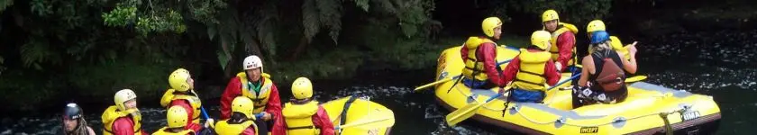
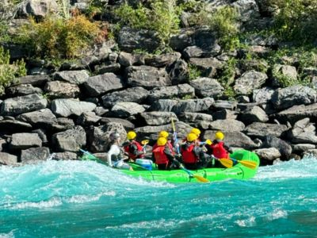
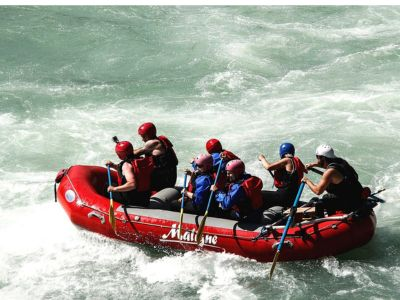
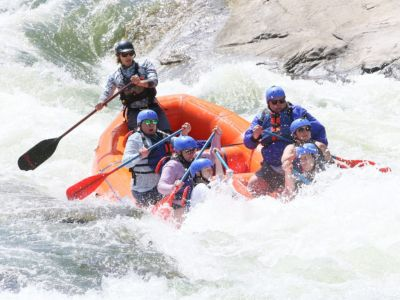

Whitewater Rafting Co
| Level | Min Rquirements | Trip Duration | Availability | Cost |
|---|---|---|---|---|
| Beginner | Age: 6 yrs; Weight 30 kg | 1.5 hrs | Apr - Sept | $300 |
| Intermediate | Age: 10 yrs; Weight 40 kg | 3 hrs | Apr - Oct | $450 |
| Advanced | Age: 16 yrs; Weight: 50 kg | 4 hrs | Mar - June | $800 |
All of our guides are licensed certified class A2+. Parental permission is required for all trips for those under 18 years of age. All rafting and safety equipment (rafts, paddles, safety helmets, life jackets), as well as towels and a meal and snacks are included in the quoted cost of the trip. Please bring any medication and sunscreen as required.
Beginner Level
Have a relaxing, peaceful day on the waters! Our guide will take you to popular bird watching sites and scenic photo taking spots. Suitable for young children and those with medical conditions. After your trip, enjoy lunch or dinner, depending on the time of your trip.

Intermediate Level
Experience the thrill of navigating the currents. This trip alternates low grade rapids with stretches of tranquil waters, for those still getting accustomed to the rigors of rafting. After your trip, enjoy a gourmet lunch and take a walk on the banks of the river.

Advanced Level
Want a challenge? Why not try our advanced level white water rafting? A four hour outing on some of most challenging rivers in British Columbia. A non-stop exhilarating marathon to test your limits! Proof of rafting level certification required. After your trip, enjoy a gourmet dinner back at our main building, depending on the time of your trip.
